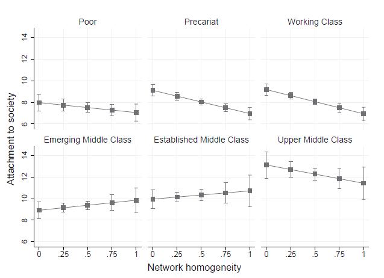

En esta cuarta entrega de la serie OCS–Investigaciones sobre cohesión social, revisamos y dialogamos con el artículo “The lives of others: Class divisions, network segregation, and attachment to society in Chile” (The British Journal of Sociology, 2022), escrito por Gabriel Otero, Beate Volker, Jesper Rözer y Gerald Mollenhorst.
Este estudio ofrece un aporte sustantivo para comprender la cohesión social en Chile —lo que los autores denominan apego a la sociedad (attachment to society)— desde una mirada que combina las divisiones de clase y la composición de las redes sociales. El trabajo profundiza tanto en la definición teórica del apego social como en los efectos que las diferencias estructurales y relacionales de clase tienen sobre la cohesión social.
Análisis empírico
El estudio utiliza datos representativos de la primera ola de la Encuesta Longitudinal Social de Chile (ELSOC, 2016), aplicada a la población urbana de entre 18 y 75 años. Mediante análisis de correspondencias múltiples y modelos de regresión lineal, se examina cómo la clase social —construida a partir del nivel educacional, clase ocupacional e ingreso del hogar— y la homogeneidad de las redes influyen sobre el nivel de apego a la sociedad.
Se identifican seis clases sociales: pobre, precaria, trabajadora, media emergente, media establecida y media alta. Los resultados muestran que el apego social aumenta sistemáticamente con la posición de clase (ver Figura 1). La clase media alta presenta los niveles más elevados, mientras que la clase precaria y la trabajadora exhiben los más bajos.
Además, la homogeneidad de las redes —es decir, relacionarse principalmente con personas de la misma clase— reduce significativamente el apego social, especialmente en los extremos de la estructura social (ver Figura 2). En particular, las clases bajas muestran menores niveles de confianza institucional y participación política cuando sus redes son más homogéneas, reforzando sentimientos de exclusión y desconfianza hacia las instituciones. En las clases altas, en cambio, la homogeneidad se asocia con una reducción en la identificación nacional y la participación cívica, lo que sugiere una forma de “pertenencia selectiva” desvinculada de la realidad de otros grupos sociales.

Comentarios de Gabriel Otero
“Uno de los principales aprendizajes de este estudio —y que conecta con los debates actuales sobre cohesión social— es que no basta con reducir las brechas materiales. Las formas en que nos relacionamos, los espacios que compartimos y las redes que habitamos también moldean nuestro sentido de pertenencia.
Chile es un país con fuertes divisiones de clase, y esas divisiones no solo se reflejan en los ingresos o la educación, sino también en nuestras amistades, barrios y conversaciones cotidianas. La segregación relacional limita el conocimiento mutuo y debilita los vínculos colectivos.
Si queremos una sociedad más cohesionada, necesitamos más oportunidades de encuentro entre mundos sociales distintos: en las escuelas, los lugares de trabajo, los espacios públicos y culturales. Porque, al final, como muestran nuestros resultados, no son solo las ideas las que sostienen la cohesión social, sino las relaciones que construimos en la vida diaria.”
Sobre el investigador

Gabriel Otero es sociólogo por la Universidad Diego Portales, Magíster en Análisis Sistémico Aplicado a la Sociedad por la Universidad de Chile y Doctor en Human Geography and Spatial Planning por la Utrecht University en Países Bajos. Actualmente es investigador asociado de la línea Geografías del Conflicto y la Cohesión de COES, académico de la Escuela de Sociología y director del Observatorio de Desigualdades de la Universidad Diego Portales. Sus intereses de investigación se relacionan con desigualdades, redes sociales, segregación, cohesión social y resultados educativos.
Últimas noticias del investigador
- COES y MINVU desarrollan agenda conjunta de investigación para fortalecer la cohesión social – COES
- Especial de género y academia: Proyecto Maxi COES “Los discursos sobre los Derechos Humanos de la ultraderecha en las redes sociales, en Chile” de la investigadora Carolina Aguilera – COES
- Directora María Luisa Méndez e investigador Gabriel Otero son elegidos para integrar comisiones en World Elite Database
Referencias
Otero, G., Volker, B., Rözer, J., & Mollenhorst, G. (2022). The lives of others: Class divisions, network segregation, and attachment to society in Chile. The British Journal of Sociology, 73(4), 754–785. https://doi.org/10.1111/1468-4446.12966